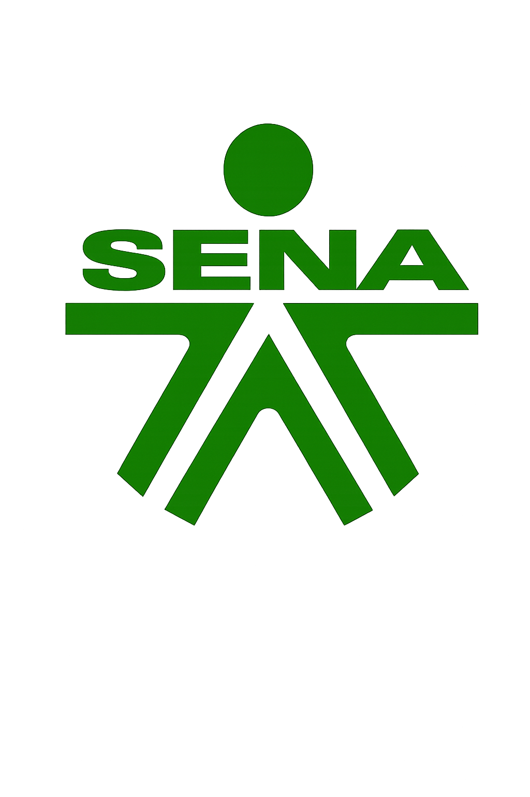
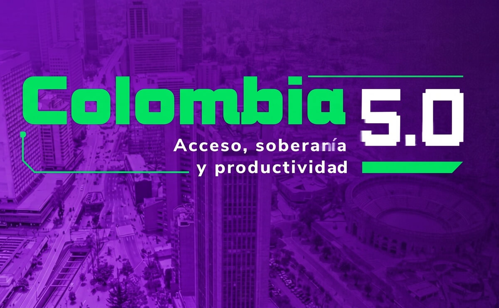

Innovación, tecnología y transformación digital en Corferias

Colombia 5.0 fue un evento enfocado en innovación,
inteligencia artificial, programación y emprendimiento.
Fue una experiencia muy interesante porque pude conocer más
sobre la tecnología, la innovación y cómo estas herramientas
están cambiando la forma en que vivimos y trabajamos.
Durante el recorrido observé diferentes proyectos,
emprendimientos y avances relacionados con inteligencia artificial,
programación, robótica y transformación digital.
Lo que más me llamó la atención fue ver cómo muchas empresas y
jóvenes están creando ideas para solucionar problemas reales a
través de la tecnología.
Además, aprendí que la tecnología no solo sirve para entretenimiento,
sino también para estudiar, trabajar y ayudar a mejorar diferentes
áreas de la sociedad.
Esta experiencia me motivó más a seguir aprendiendo sobre sistemas
y desarrollo tecnológico, ya que pude ver todo lo que se puede lograr
con creatividad y conocimiento.
Game UI Systems: de pantallas bonitas a interfaces que funcionan
Competiciones, videojuegos y experiencias de realidad virtual.
Presentación de startups y proyectos innovadores.